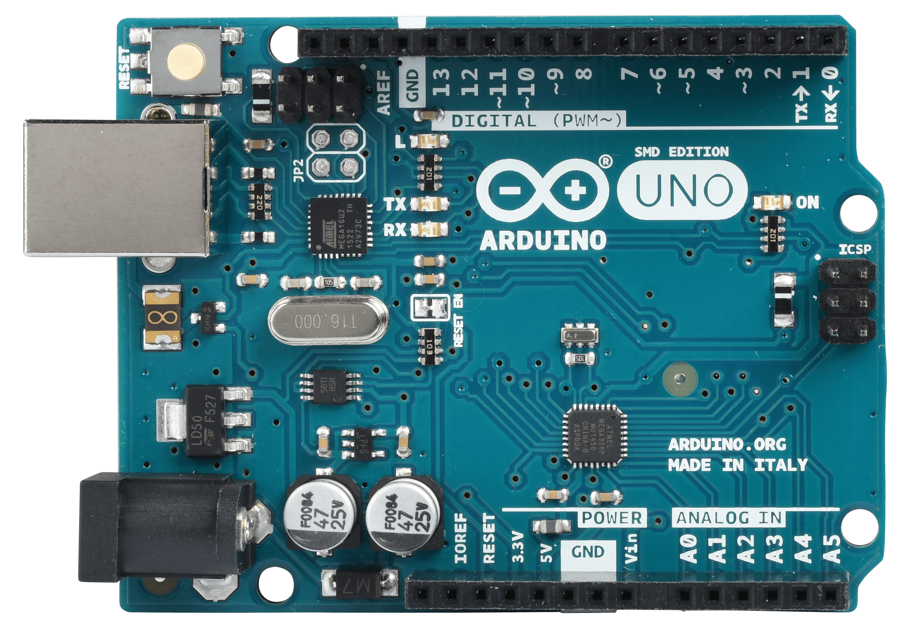

Els diferents microcontroladors tenen en comú els seguents aspectes:
PWM significa modulació de l'ample de banda, en anglès Pulse Width Modulation i és una forma d'aconseguir una sortida analògica a partir de diverses sortides digitals, molt ràpides.
PWM es representa amb el símbol "~" tal com podem veure a la imatge següent d'un Arduino Uno
Més amunt podem veure que els pins números 3, 5, 6, 9, 10 i 11
Aquests PWM són sortides analògiques de 8 bits, en el cas d'Arduino Uno Rev3 d'acord amb el fabricant , mentres en el cas d'Arduino Uno Rev4, és de 12 bits segons el fabricant , que l'anomena DAC, que vol dir Digital Analog Converter
Tenir 8 o 12 bits en un convertidor digital analògic o DAC (Digital Analog Converter) tipus PWM fa que tinguem 28 o 210 nivells diferents de corrent, és a dir, 256 nivells diferents o 2048 nivells diferents
Soposem que tant Arduino uno Rev3 com Rev4 poden donar 5 volts com a màxim. Quina seria la resolució en milivolts de cada Arduino?
5 vols dividit entre 256 dona 0.01953125 volts = 19.53125 milivolts per Arduino Uno Rev3
5 vols dividit entre 2048 dona 0.00244140625 volts = 2.44140625 milivolts per Arduino Uno Rev4
Els milivolts anterior són la resolució que aconseguim. Imaginem que volem regular la intensitat d'un LED amb un Arduino Uno Rev3 aconseguim menys fluid i amb graons més grans, es a dir canvis més bruscs perque 256 canvis són menys que 2048 volts. A continuació veurem una imatge que repreenta com combinant moltes senyals digitals ràpidament sembla que generem un senyal analògic, aixo és la base del PWM.

Quan major és l'amplada del pols vol dir que major és el temps que la sortida digital està en voltatge alt, per exemple 5V i menys temps està a 0V, i per tant el promig de tots els polsos és més alt. En canvi si per exemple si cada pols és més estret a 5V vol dir que estarà més temps a 0V, i per tant el promig de tots els polsos és més baix. A la imatge de a dalt es pot veure com s'encendria un LED o un motor funcionaria a una velocitat del 0%, 25%, 50%, 75%, 100%. Quin percentatge del senyal canviara en un cas i en un altre?
A la taula a continuació veuras els valors per defecte de la freqüència PWM en Arduino Uno Rev3
| PIN de Sortida | Freqüència PWM (Hz) |
|---|---|
| PINS: 3, 9, 10 i 11 | 490 Hz |
| PINS: 5 i 6 | 976 Hz |